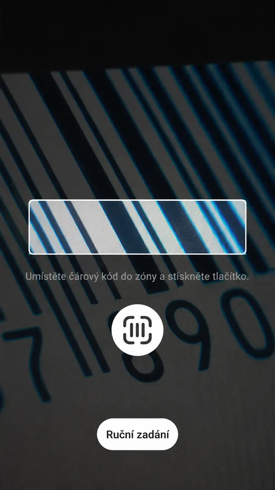
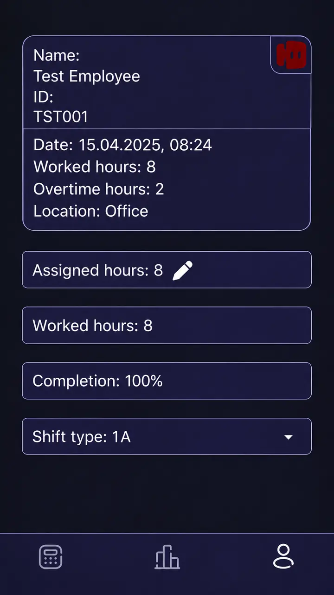

MAO
Production tracking on ordinary Android phones. A mobile app for operators at Labara s.r.o., a Czech manufacturer, connected to the company's own server.
- Role
- Full-stack engineer, backend and mobile app
- Period
- 08/2024 – 12/2025
- Stack
- React Native (Expo), Django REST Framework, PostgreSQL, JWT
Problem
Production records depended on dedicated hardware devices that were costly to buy and hard to maintain.

What I built
A mobile app plus an admin web app used across 25+ machine types. I worked directly with the client to design operation-specific interfaces and calculations for each machine type. Operators choose a machine, log operations, and see their hours and personal statistics.

- 01Operator profileWho is working, when and where
- 02HoursAssigned, worked and overtime
- 03CompletionProgress against the assigned hours
- 04ShiftPicked on the phone, per day
Result
Dedicated devices were replaced by ordinary phones, which cut equipment costs and made maintenance simpler. The app is still used in production.